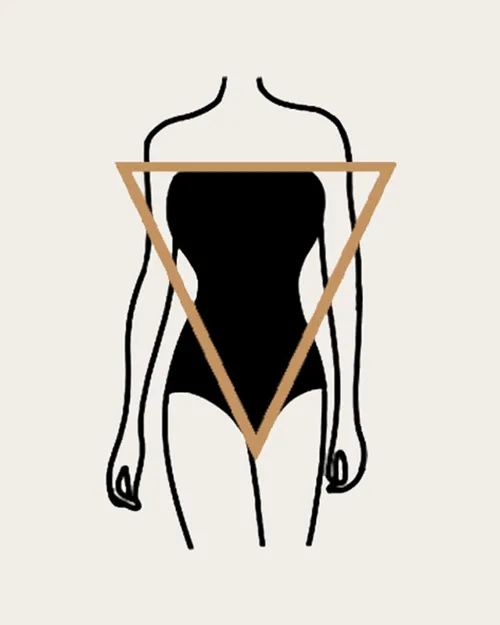

The inverted triangle body shape is defined by broad shoulders or a broad bust line that narrows down through your hips. In other words, your shoulders or bust are the strongest part of your shape. They are wider than your waist, and your waist is wider than your hips. When you look in a full-length mirror, you can draw an inverted triangle from your two shoulder points diagonally down to your hips.This body shape tends to reflect an athletic build.
